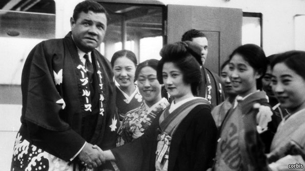

(and that got me to thinking on New Year’s Eve eve, or perhaps it was a dream brought on by too much KFC, strawberry shortcake, Laurent Peerier and Dip — now there’s a perfect New Year’s DipCon Japanese-style) … LET’S GO BACK TO JAPAN, PERRY, BABE RUTH, AND DUNNIGANFamous Japanese painting: “The Battle of Awazu” (Ukiyo-e) The Diplomatic Courier: “The Japanese Model in Diplomacy” (Japan is one of the few countries were female diplomats were as highly regarded as males. This interesting article has some background on Japanese diplomacy.) 
Japanese depiction of a Black Ship Searching in History: “Perry’s Gunboat Diplomacy in Japan” (Just looking at the Google images of Perry’s visit to Japan reveals a lot about Japanese-American diplomacy.)

Baseball star Babe Ruth visits Japan Japan Today: “The Sultan of Swat Babe Ruth visits Japan” (Japan’s fascination with American games goes back a long way.) 
BoardGameGeek: Jim Dunnigan, Boardgame Designer
One of the greatest losses in Diplomacy history took place at DIPCON XXII in San Diego when I very naively traded my carefully acquired set of the first 30 or so issues of S&T — that I had acquired by trading my Diplomacy ‘zine XENOGOGIC for them — with Jim Dunnigan while he was in Japan. At that time the ‘zine was actually printed in Japan and then shipped to the US for distribution. What did I get in return? Ron Spitzer offered me two copies of the European version of Diplomacy for my never punched S&Ts. As first I hesitated, but Ron had a way with words and the ability to charm oil out of a snake and I eventually agreed. Not since the Russians sold Alaska has … Steve Cooley still cries when he remembers that story. I only mention this because it shows how far back the history of Diplomacy actually goes in Japan. Dunnigan was trading with a half-dozen or so of the postal Diplomacy hobby’s earliest publishers, probably looking for prospective S&T subbers.
If you wish to e-mail feedback on this article to the author, and clicking
on the envelope above does not work for you, feel free to use the
|